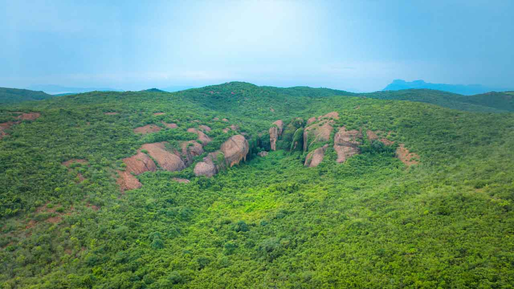

THIRUVALLUR
Gudiyam Caves

The Gudiyam Caves, located in Thiruvallur district, Tamil Nadu, are among the oldest Stone Age sites in South India.Discovered by Robert Bruce Foote, these caves date back nearly 200,000 years to the Lower Paleolithic period.They contain ancient stone tools and artifacts, showing evidence of early human habitation and lifestyle.